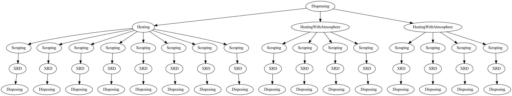

Quickstart
Contents
Quickstart¶
Basically, you need to define an experiment first. Then you will add sample
to the experiment. Each sample will have some operations and finally, you can
generate the input file, which can be submitted to the Alab Management software
directly.
from alab_experiment_helper import Experiment
experiment = Experiment("test_experiment")
# Sample Declaration
samples = [experiment.add_sample(name="sample_" + str(i)) for i in range(16)]
sample_group_1 = samples[0:8]
sample_group_2 = samples[8:12]
sample_group_3 = samples[12:16]
# Task Declaration
dispensing(samples, input_file_path="example.csv")
heating(sample_group_1, [[300, 60], [300, 600]])
heating_with_atmosphere(sample_group_2, [[300, 60], [300, 600]], atmosphere="Ar")
heating_with_atmosphere(sample_group_3, [[300, 60], [300, 600]], atmosphere="N2")
for sample in samples:
scraping(sample, duration_min=6, ball_number=8)
xrd(sample, schema="fast_10min")
disposing(sample)
# Generate the input file with JSON format
experiment.generate_input_file("test.json", "json")
The task generated is something like this:
More details¶
The whole package tries to make the task generation a declarative process, where each
script should describe one Experiment. In the Alab Workflow System, an experiment
is a list of samples to be made, where a sequence of tasks will be operated on the
samples.
The input file can be divided into two parts: Sample Declaration and Task
Declaration.
At the top of each script, you should declare an Experiment object, like this
from alab_experiment_helper import Experiment
# The name can be any names you like. But a clear and unique name will
# help you find the information you want more easily later.
experiment = Experiment(name="test_experiment")
Then, you can add samples to the experiment, which is the Sample Declaration part
# the name of samples should be unique, which you will refer to it
# later in the task definition.
samples = [experiment.add_sample(name="sample_" + str(i)) for i in range(16)]
After declaring the samples, you need to specify which kind of tasks you want to do on each sample. The task will be conducted in order. The package will automatically record the order of the tasks based on the order of declaration. Each task is a function that receives one or a list of samples as well as many task specified parameters.
Note
The available tasks can be found in the Tasks Overview section.
from alab_experiment_helper.tasks import *
dispensing(samples, input_file_path="example.csv")
Generating the input file¶
Finally, you can choose to generate the input file and save it to a certain path. Currently,
we support two formats: json and yaml. Both files can be submitted to the workflow
software without any problem.
# first argument: the path to save the input file
# second argument: the format of the input file, can be either ``json`` or ``yaml``
experiment.generate_input_file("test.json", "json")
Visualizing the experiment graph¶
As we talked about before, the tasks have orders. Internally, we represent the tasks as
a directed graph. The graph can be visualized by using the visualize function of
Experiment object.
Note
Before you use this function, you need to install graphviz, which you can
find useful information in the graphviz website.
# The first argument is the path to save the graph image
# The second argument is the format of the image, can be
# ``png``, ``svg``, ``jpg`` or ``pdf``
experiment.visualize("figure.png", "png")